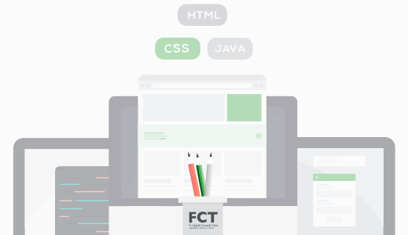

O estilos é um guia com soluções visuais para as componentes e os elementos web.

Soluções UI tipificadas
O estilos é um guia com soluções visuais para as componentes e os elementos web.
As soluções de UI (User Interface) são uma versão completa, estilizada e atualizada,
para a construção das plataformas e aplicações web da Fundação para a Ciência e a Tecnologia.
Os estilos Soluções UI, desenho
Versão 3.3 • Revisão